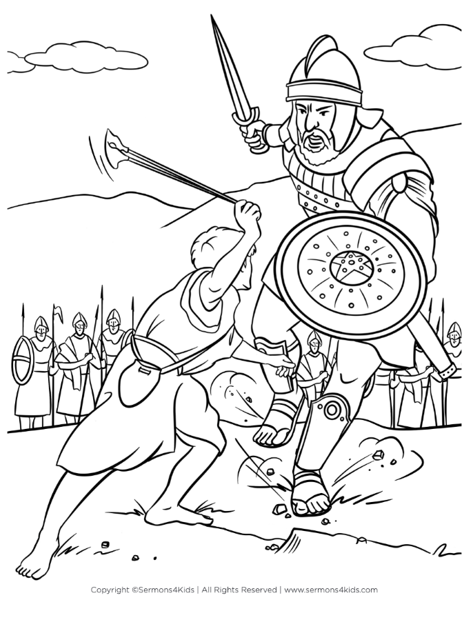

Watch the Story

Download Coloring SheetA long time ago, the Israelites were fighting the Philistines. The Philistines had a giant warrior named Goliath. He was super tall and very scary. Every day, Goliath came out and shouted, “Who will fight me?” But everyone was too afraid.
One day, a young shepherd boy named David came to bring food to his brothers who were soldiers. When he heard Goliath’s challenge, he said, “I will fight him!” Everyone was surprised. David was small, but he trusted God.
David didn’t wear armor or carry a sword. Instead, he picked up five smooth stones and his slingshot. He ran toward Goliath and said, “You come at me with a sword and spear, but I come at you in the name of God!”
David put a stone in his slingshot, swung it, and hit Goliath right in the forehead. The giant fell down, and David won!
The Israelites cheered because God had helped David defeat the giant. David showed everyone that with faith in God, even the smallest person can do great things.
Lesson: Trust God, and He can help you do things that seem impossible!
{kind=link}